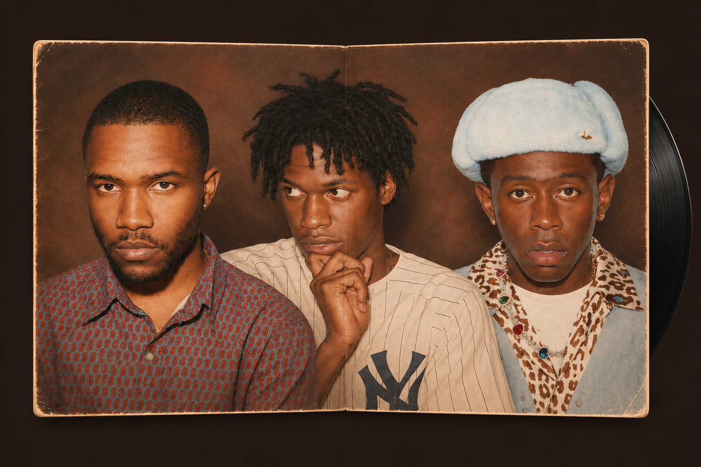

Music worth listening to.
A listening guide to Frank Ocean, Daniel Caesar and Tyler, the Creator.

The collection

Discover a record
Find your next record.
Flip a sleeve to explore an artist and find your next listen.
A listening guide to Frank Ocean, Daniel Caesar and Tyler, the Creator.

Discover a record
Flip a sleeve to explore an artist and find your next listen.